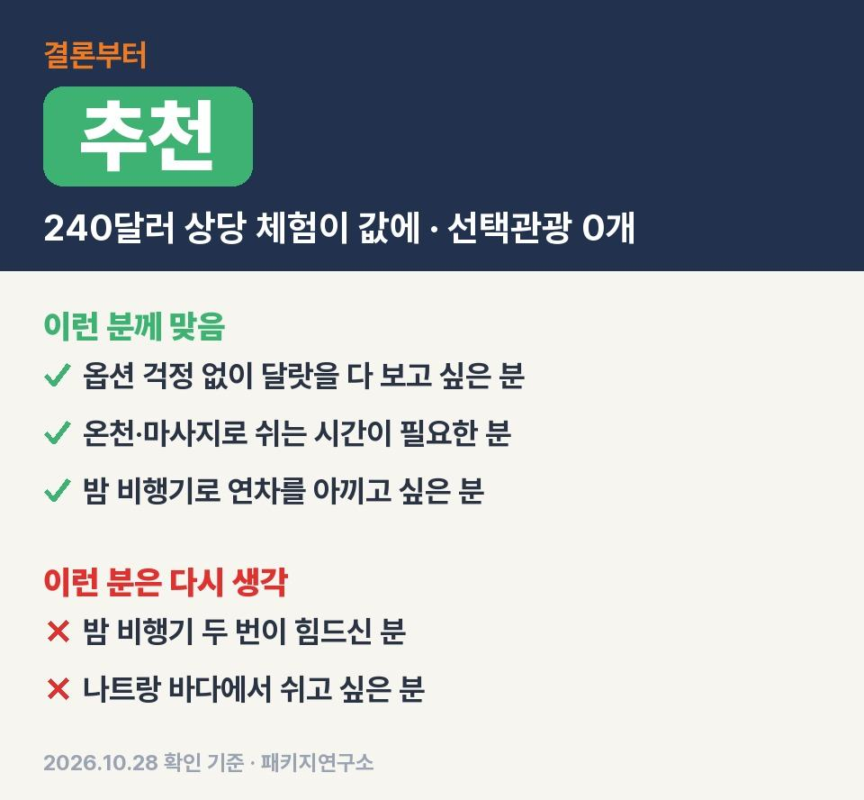
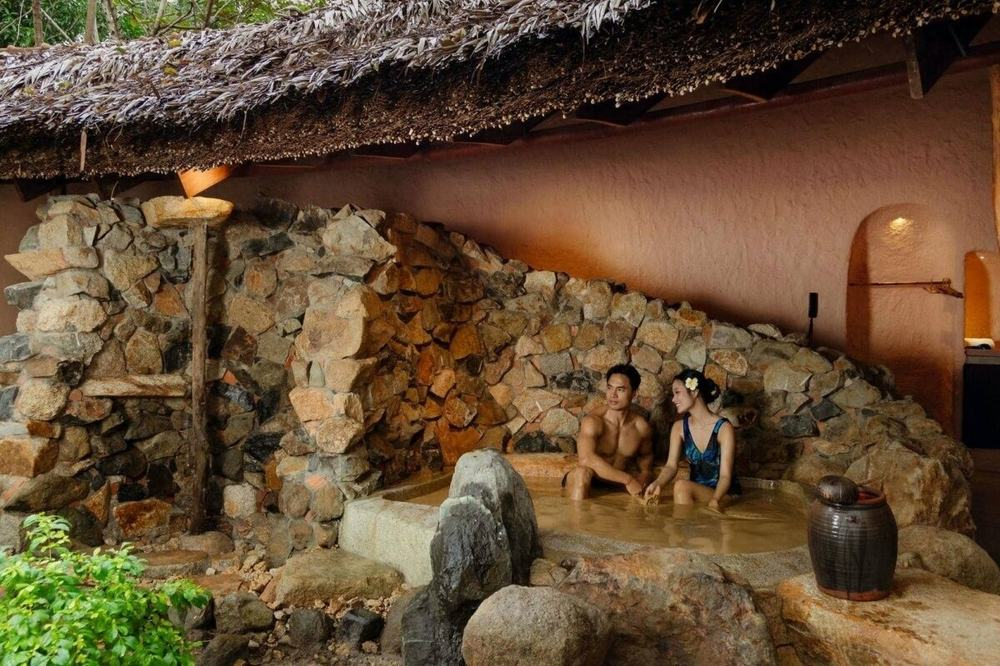
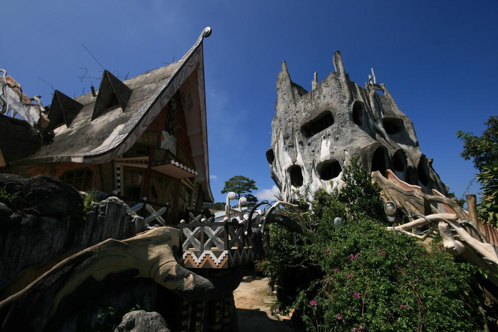
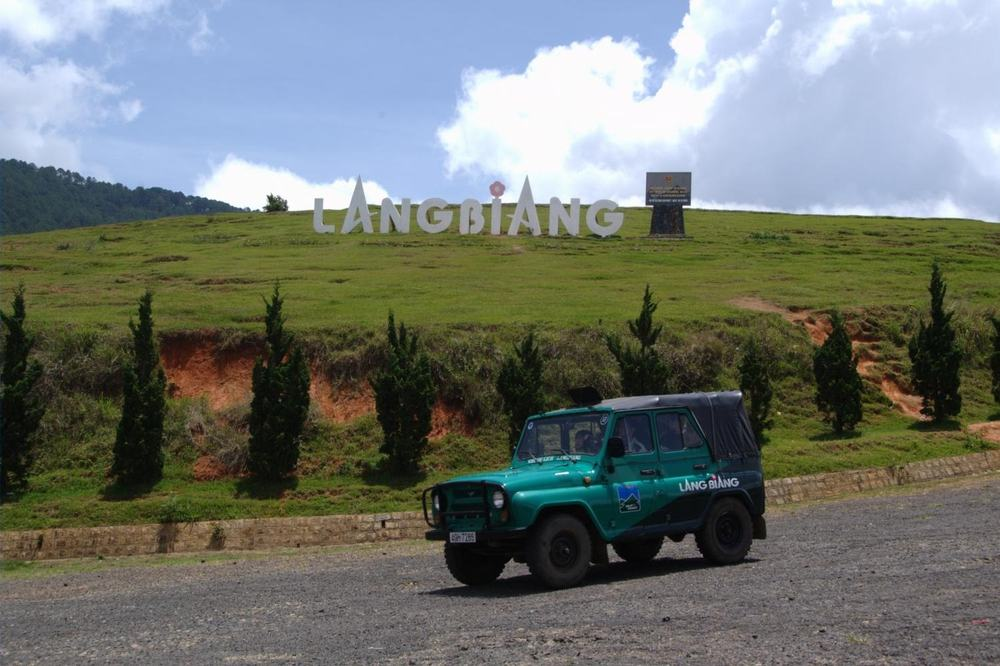

나트랑 효도여행 참좋은여행 패키지 여행 59만 9천원, 선택관광 0개에 머드온천·랑비앙 짚차·마사지 90분 든 달랏 3박 5일
부모님 나트랑 보내드리려고 달랏까지 도는 패키지를 찾다가, 옵션이 하나도 없다는 상품이 있어서 원문을 끝까지 읽어 봤음.
직접 다녀온 후기가 아니라, 참좋은여행 일정표랑 포함·불포함 원문을 하나씩 따져 본 글이라 그 점은 감안하고 보시면 됨.
결론 — 추천. 50만원대 값에 머드온천·케이블카·레일바이크·짚차·마사지 90분이 다 들어 있음. 다만 밤 비행기 두 번이 힘드신 분은 맞지 않음.

오늘 기준 출발일별 요금 보기
https://package-researcher.github.io/r/dli_verygood_20261222-t.html
| 항목 | 내용 |
|---|---|
| 가격 | 1인 599,000원 (성인 · 12월 출발 기준) · 2인 1,198,000원 |
| 여행사 | 참좋은여행 |
| 항공 | 티웨이 직항 (TW033·TW034) · 인천 20:10 → 나트랑 23:55 / 나트랑 00:55 → 인천 07:55 |
| 숙소 | 나트랑 1박(베스트웨스턴 · 멜리아 빈펄 엠파이어 또는 동급) + 달랏 2박(멀펄 · 골든 썬 또는 동급) |
| 일정 | 3박 5일 · 버스 · 한국어 가이드 · 선택관광 없음 · 쇼핑 2회 · 가이드·기사 경비 1인 $50 별도 |
▶ 내 출발일 오늘 기준 요금 확인 (제휴 링크 · 예약 시 수수료를 받으며 가격은 같습니다)
▶ 10월 28일 기준 나트랑 패키지 최저 29만 9천원부터 — 출발일별 값 한 화면에: 비교 페이지
같은 일정을 에어로케이 출발로 고르면 1인 54만 9천원임(10월 28일 기준 · 출발일마다 다름).
| 번호 | 내용 | 한 줄 답 |
|---|---|---|
| 1 | 이 값에 들어 있는 것 | 체험 6가지 · 식사 9회 |
| 2 | 현장에서 더 낼 돈 | 2인 약 14만원 |
| 3 | 일정과 체력 | 4일차가 제일 김 |
| 4 | 자유여행으로 짜면 | 1인 약 104만원 |
| 5 | 맞는 분 · 안 맞는 분 | 밤 비행기 괜찮은 분 |
1. 이 값에 들어 있는 것
[VIDEO: output/dli_verygood_20261222/shorts/must5.mp4 | 나트랑·달랏 3박 5일 이 값에 든 것 1분 영상 | 출처: Mẫn Duyên · CHAU DUC CHANNEL (YouTube CC BY) / Lang Biang mountain 1 (Wikimedia Commons CC BY-SA 2.0) / Parko Prenn 41 (Wikimedia Commons CC BY-SA 4.0) / Thác Datanla (Wikimedia Commons CC BY 2.0) / Hang Nga guesthouse 01 (Wikimedia Commons CC BY 1.0)]

솔직히 처음엔 노옵션이라길래 그럼 볼 게 빠졌겠지 싶었음.
근데 원문에 「$240 상당 선택관광 포함」 이라고 적힌 목록이 따로 있음.
- 아이리조트 머드온천 (머드탕 약 20분, 옷·큰 타월 빌려줌)
- 죽림선원 케이블카, 다딴라 폭포 레일바이크
- 랑비앙 정상까지 짚차 (해발 1,900m)
- 달랏 야시장 반짱느엉 + 맥주나 음료 한 잔
- 마지막 날 전신 마사지 90분 (팁 별도)
여기에 왕복 항공권, 호텔 3박, 식사 9회, 여행자보험, 한국어 가이드가 기본으로 붙음.
식사는 쏨모이가든, 낙지볶음, 몽골리안 철판볶음, 무제한 삼겹살, 소불고기 전골 같은 메뉴가 원문에 있고 호텔식이 네 번.
선택관광이 0개라서 현지에서 옵션 값을 따로 꺼낼 일이 없음. 이게 이 상품의 핵심.
그 대신 쇼핑센터를 두 번 들름(침향, 커피 · 한 곳에 약 1시간). 사는 건 자유.

호텔은 출발 2~3일 전에 확정됨. 나트랑은 베스트웨스턴이나 멜리아 빈펄 엠파이어, 달랏은 멀펄이나 골든 썬이 예정이고 바뀌면 같은 급으로 감.
혼자 방을 쓰면 싱글룸 25만원이 붙음.
2. 현장에서 더 낼 돈
| 항목 | 금액 | 비고 |
|---|---|---|
| 가이드·기사 경비 | 100달러 | 1인 $50 × 2명 |
| 선택관광 | 0원 | 노옵션 |
| 마사지 팁·매너팁 | 고르는 만큼 | 자율 |
| 기내식 | 사 먹는 만큼 | 기내식 불포함 |
| 혼자 쓰는 방 | 250,000원 | 1인 예약일 때만 |
| 합계 (2인) | 100달러 (약 14만원) | 상품가 2인 1,198,000원 + 경비 |
두 분이 가면 상품가 119만 8천원에 경비 100달러, 1달러 1,400원으로 치면 약 14만원.
합쳐서 두 분 약 134만원, 한 분에 약 67만원이 실제로 드는 돈.
마사지 팁이랑 매너팁 낼 달러 소액권만 따로 챙기시면 됨.
3. 일정과 체력
[VIDEO: output/dli_verygood_20261222/shorts/card6.mp4 | 나트랑·달랏 3박 5일 가는 곳 영상으로 보기 | 출처: Liem Huynh (YouTube CC BY) / Hang Nga guesthouse 01 (Wikimedia Commons CC BY 1.0) / Thác Datanla (Wikimedia Commons CC BY 2.0)]

| 일차 | 가는 곳 | 버스 | 걷기 | 점심 · 저녁 |
|---|---|---|---|---|
| DAY 1 | 20:10 인천 출발 → 23:55 나트랑 → 호텔 | 약 0.7시간 | 적음 | 없음 |
| DAY 2 | 포나가르 사원 → 머드온천 → 달랏 이동 → 바오다이 별장 → 크레이지 하우스 → 쑤언흐엉 호수 | 약 4.5시간 | 보통 | 현지식 · 한식 |
| DAY 3 | 죽림선원 케이블카 → 다딴라 레일바이크 → 천국의 계단·커피 → 달랏 기차역 → 린푸억 사원 → 달랏 대성당 → 야시장 | 약 1.5시간 | 보통 | 현지식 · 한식 |
| DAY 4 | 랑비앙 짚차 → 멀펄 호텔 점심 → 나트랑 이동(약 3시간 30분) → 쇼핑 → 롱선사 → 마사지 90분 → 공항 | 약 5시간 | 보통 | 호텔식 · 한식 |
| DAY 5 | 00:55 나트랑 출발 → 07:55 인천 | — | 적음 | 없음 |
부모님 체력은 넷째 날만 보면 됨.
아침에 랑비앙 올라갔다가 버스로 3시간 반을 내려오고, 쇼핑이랑 롱선사를 본 뒤 마사지 받고 바로 공항으로 감.
호텔 없이 새벽 비행기를 타는 날이라 마사지 시간이 그나마 쉬는 시간임.
롱선사는 복장 규정이 있음. 민소매는 안 되고 발목까지 오는 바지나 치마여야 함. 근처에서 빌릴 데가 없다고 원문에 적혀 있음.
고갯길 버스가 길어서 멀미 잘 하시는 분은 약을 미리 챙기시는 게 편함.

이 상품 조건 한눈에 (출발일 달력·두 분 값·비슷한 상품과 비교)
https://pkg-lab.com/pkg/APP2528_TW35/?utm_source=blog&utm_medium=post&utm_campaign=daily
같은 목적지 다른 여행사 패키지, 쇼핑·선택관광·가이드 경비까지 비교
https://pkg-lab.com/go/?q=%EB%82%98%ED%8A%B8%EB%9E%91+12%EC%9B%94&utm_source=blog&utm_medium=post&utm_campaign=daily
4. 자유여행으로 짜면
| 항목 | 금액 | 근거 |
|---|---|---|
| 인천–깜란 왕복 항공 | 355,000원 | ICN↔CXR 직항 왕복 1인 (앞으로 두 달 직항 운임 하위 25% 값 · 2026-10-28 마이리얼트립 조회) |
| 체험 6가지 | 336,000원 | 여행사 표기 $240 상당 × 1,400원 |
| 호텔 3박 | 120,000원 | 2인 1실 1인분 (추정) |
| 식사 (점심 3 · 저녁 3) | 110,000원 | 현지식·한식 (추정) |
| 공항 이동 · 나트랑↔달랏 차량 | 100,000원 | 공항·달랏 왕복 2인 나눔 (추정) |
| 여행자보험 · 유심 | 15,000원 | 5일 기준 (추정) |
| 가이드 | — | 자유여행은 없음 |
| 합계 | 약 1,036,000원 |
항공이랑 체험만 더해도 벌써 69만원쯤임.
호텔·식사·차량까지 넣으면 1인 약 104만원, 패키지는 경비 더해도 약 67만원.
대신 정해진 순서대로 움직이고 쇼핑 두 번이 끼어 있음. 이건 장단점이 확실함.
나트랑에서 달랏은 고갯길로 3시간 넘게 가는 거리라, 직접 가면 차를 따로 불러야 함.
패키지는 전용 버스가 호텔 앞까지 다 묶어서 다니니까 부모님 모시고 가면 이게 은근 큼.
5. 맞는 분 · 안 맞는 분
| 맞는 분 | 안 맞는 분 |
|---|---|
| 옵션 걱정 없이 달랏을 다 보고 싶은 분 | 밤 비행기 두 번이 힘드신 분 |
| 온천·마사지로 중간에 쉬는 시간이 필요한 분 | 나트랑 바다에서 쉬는 시간을 원하는 분 |
| 밤 비행기로 연차를 아끼고 싶은 분 | 쇼핑 일정이 아예 없길 바라는 분 |
밤 비행기만 괜찮으면 50만원대에서 체험이 이만큼 다 들어 있는 건 흔치 않음.
반대로 바다 보면서 쉬는 게 목적이면 이 상품은 고르시면 안 됨. 이 일정은 달랏 고원이 주인공.
자주 묻는 질문
Q. 나트랑 패키지 쇼핑은 몇 번 가나요?
A. 두 번. 침향 매장이랑 커피 매장이고 한 곳에 약 1시간. 구매는 자유.
Q. 나트랑 패키지 노쇼핑인가요?
A. 아님. 쇼핑은 두 번 있고, 대신 선택관광이 없는 노옵션 상품임.
Q. 나트랑 패키지 가격에 가이드 경비도 들어 있나요?
A. 안 들어 있음. 1인 50달러를 현지에서 냄. 그 밖에 마사지 팁·매너팁은 자율.
마무리
결국 머드온천부터 랑비앙 짚차, 마사지 90분까지 옵션 걱정 없이 한 값에 끝나는 일정.
밤 비행기 두 번이 괜찮은 분이면 이 값에 꽤 잘 들어 있는 편이라고 봄.
출발일마다 값이 달라서 가시려는 날짜 요금부터 확인해 보시면 됨.
오늘 기준 출발일별 요금 보기
https://package-researcher.github.io/r/dli_verygood_20261222-e.html
이 글에는 네이버 제휴 링크가 포함되어 있으며, 링크를 통해 예약하시면 일정 수수료를 받습니다. 가격은 동일합니다. 가격과 구성은 2026년 10월 28일 확인 기준이며 출발일에 따라 달라질 수 있습니다.
▶ 이 상품, 영상으로 보기 (유튜브)
▶ 나트랑 패키지 오늘 값 나란히 비교
▶ 같은 목적지 다른 여행사 패키지, 쇼핑·선택관광·가이드 경비까지 비교: pkg-lab.com
사진 출처 (저작자 · 라이선스):
Hang Nga guesthouse 01 — CC BY 1.0 (Wikimedia Commons) 원본

Lang Biang mountain 1 — CC BY-SA 2.0 (Wikimedia Commons) 원본

Linh Phuoc Pagoda (31523654908) — CC BY-SA 2.0 (Wikimedia Commons) 원본
.jpg){kind=link}
그 밖의 사진: Bing(www.tisland.travel)
쇼츠·클립 영상과 사진:
Tắm bùn Nha Trang — Mẫn Duyên (YouTube, CC BY) 원본
Vlog Đà Lạt Nhìn Toàn Cảnh Trên Đỉnh LangBiang | C — CHAU DUC CHANNEL (YouTube, CC BY) 원본
Parko Prenn 41 — CC BY-SA 4.0 (Wikimedia Commons) 원본

Thác Datanla — CC BY 2.0 (Wikimedia Commons) 원본

Festival biển Nha Trang 2013 - tham quan Tháp Bà P — Liem Huynh (YouTube, CC BY) 원본